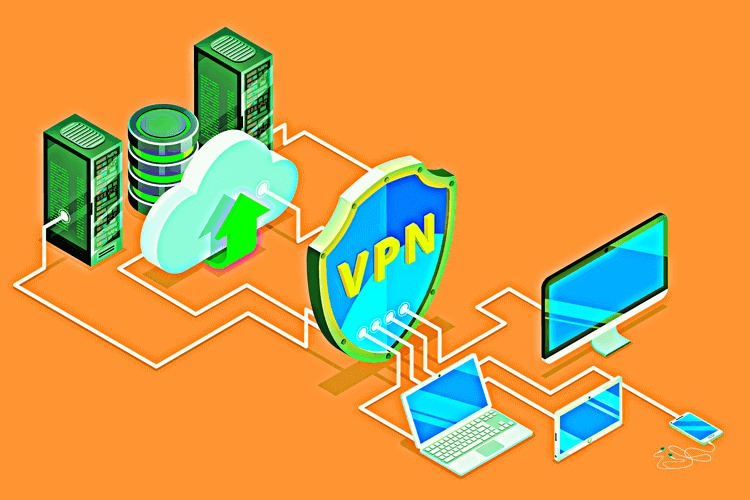

Day 18
What’s a VPN? (Virtual private network)
Imagine this: you’re at a bustling café, sipping your favorite latte, and you want to check your email. But wait! What if someone sneaky is trying to peek at your personal info? Enter the VPN—your Very Personal Network! Think of it as your secret tunnel to the internet.
What’s DNS? (Domain Name System)
Now, let’s talk about DNS—the Domain Name System. Think of DNS as the internet’s friendly librarian. Instead of remembering complex IP addresses, DNS translates website names into easily recognizable formats.
Using a VPN and DNS together can dramatically enhance your online experience. Here are some compelling reasons to consider:
When you combine a VPN with DNS, you’re equipped with powerful tools for safe and unrestricted internet browsing:
To maximize your online security and browsing experience, it’s crucial to select the right VPN and DNS services:
In today’s digital world, maintaining your online privacy is essential. By utilizing a VPN and a reliable DNS service, you can confidently explore the internet, whether you’re streaming, browsing, or just staying connected.
So, are you ready to surf smart? Equip yourself with a VPN, set up a robust DNS, and dive into the digital ocean with confidence! Remember, knowledge is power, and with the right tools, you can safeguard your online presence like a pro!